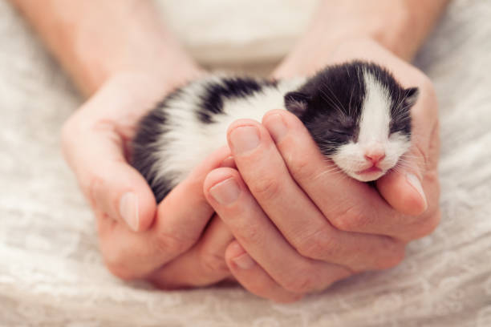
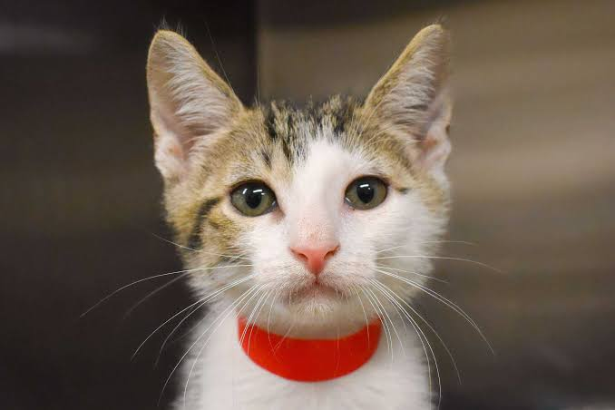
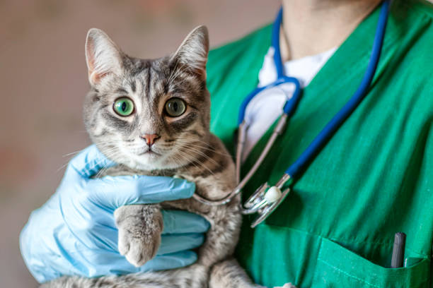
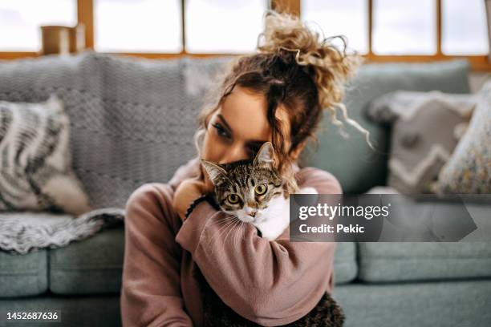
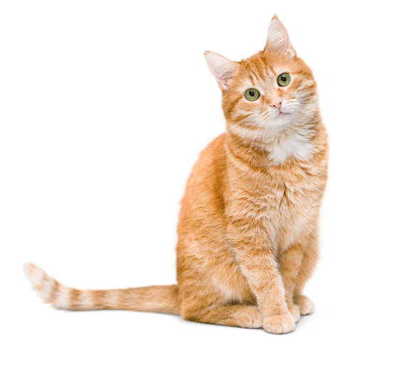
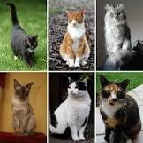
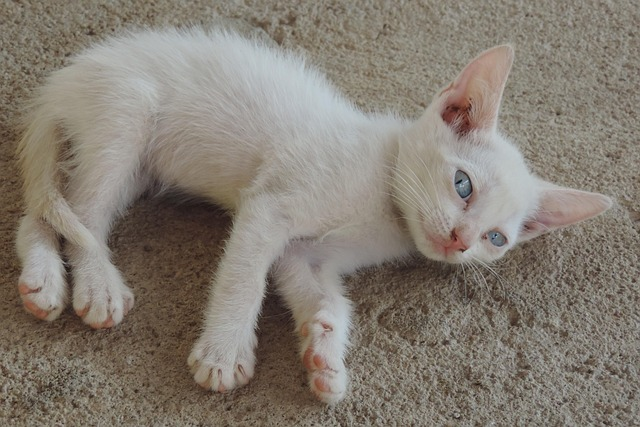
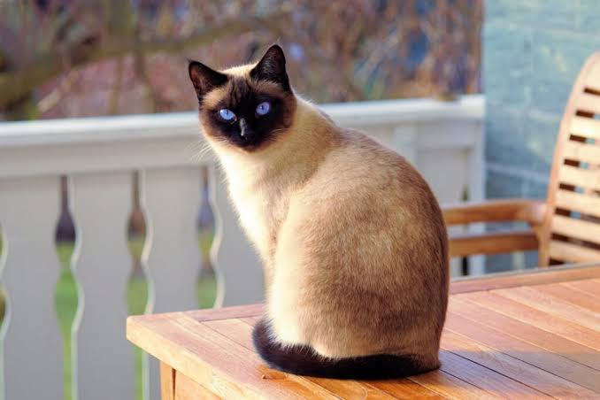
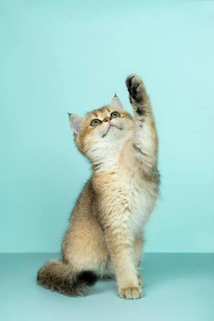
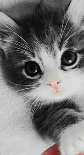

El amor de un gato
“Un gato no solo llega a tu hogar; llega para convertirse en parte de tu corazón.” 💜
Los gatos pueden convertirse en compañeros maravillosos. Cada ronroneo, mirada y pequeño gesto demuestra el cariño que pueden compartir.
Todo lo que tu compañero felino necesita para mantenerse sano, feliz y lleno de vida.
Cuidados profesionales y personalizados para la salud de tu gato.
Orientación para mantener a tu compañero felino sano y protegido.
Atención pensada para que tu gato se sienta seguro, tranquilo y querido.

En Huellitas de Amor nos especializamos en brindar atención veterinaria exclusivamente para gatos, creando un espacio tranquilo, seguro y lleno de cariño para cada pequeño paciente.
Sabemos que cada gato tiene una personalidad única. Por eso ofrecemos cuidados pensados para su bienestar, salud y tranquilidad.
“Cada ronroneo nos recuerda por qué elegimos cuidar de ellos.” 🐱💜
En Huellitas de Amor creemos que cada gatito merece recibir cariño, protección y los mejores cuidados.

Desde sus primeros días, nuestros pequeños compañeros necesitan amor, protección y atención para crecer sanos y felices.

Cada gato tiene una forma especial de demostrar cariño. Nosotros nos encargamos de cuidar esa confianza con dedicación.
Consejos, cuidados y momentos especiales para nuestros pequeños compañeros.

Cada gatito merece un hogar donde pueda sentirse seguro, querido y protegido.
“El amor de un gato convierte una casa en un hogar.” ❤️
Una buena alimentación, higiene y atención veterinaria ayudan a mantener a nuestros gatos felices y saludables.
“Cuidarlo es una forma de decirle cuánto lo amas.” 🐾

No importa su color, tamaño o personalidad. Cada gato tiene una manera especial de llenar nuestras vidas de alegría.
“Pequeñas patitas, grandes recuerdos.” 🐾

Observar el comportamiento de tu gato te ayudará a comprender mejor sus necesidades y emociones.
“Ellos no necesitan palabras para decirnos que nos aman.” ❤️

Compartir tiempo con nuestros gatos crea un vínculo especial basado en confianza, cariño y compañía.
“Un gato puede ser un pequeño compañero para toda la vida.” 🐱❤️
Las revisiones veterinarias son importantes para detectar problemas y mantener la salud de nuestros gatos.
“Prevenir también es una forma de amar.” 🩺🐾

Nuestro compromiso es brindar atención, cuidado y mucho cariño a cada pequeño paciente.
“Porque ellos también son parte de nuestra familia.” ❤️🐱
Consejos, cuidados y mucho amor para nuestros compañeros de cuatro patas.

“Un gato no solo llega a tu hogar; llega para convertirse en parte de tu corazón.” 💜
Los gatos pueden convertirse en compañeros maravillosos. Cada ronroneo, mirada y pequeño gesto demuestra el cariño que pueden compartir.

“Cuidar su salud hoy es regalarle muchos momentos felices mañana.” 🐾
Las revisiones veterinarias ayudan a cuidar la salud de nuestros gatos y a acompañarlos durante cada etapa de su vida.

“Los pequeños ronroneos hacen grandes momentos.” 😻
Un hogar seguro, cariño, alimentación adecuada y atención veterinaria son parte de una vida feliz para nuestros amigos felinos.
Porque cada gato merece recibir amor, atención y una vida llena de bienestar.
Aprende más sobre el cuidado y bienestar de nuestros queridos gatos.
💜 Pequeños cuidados hacen grandes diferencias.
🐱 “Un gato feliz llena el hogar de ronroneos.”
Nuestro compromiso es cuidar a cada gato con cariño, respeto y dedicación.
Porque entendemos lo especial que es tu gato y le brindamos una atención profesional, humana y libre de estrés.